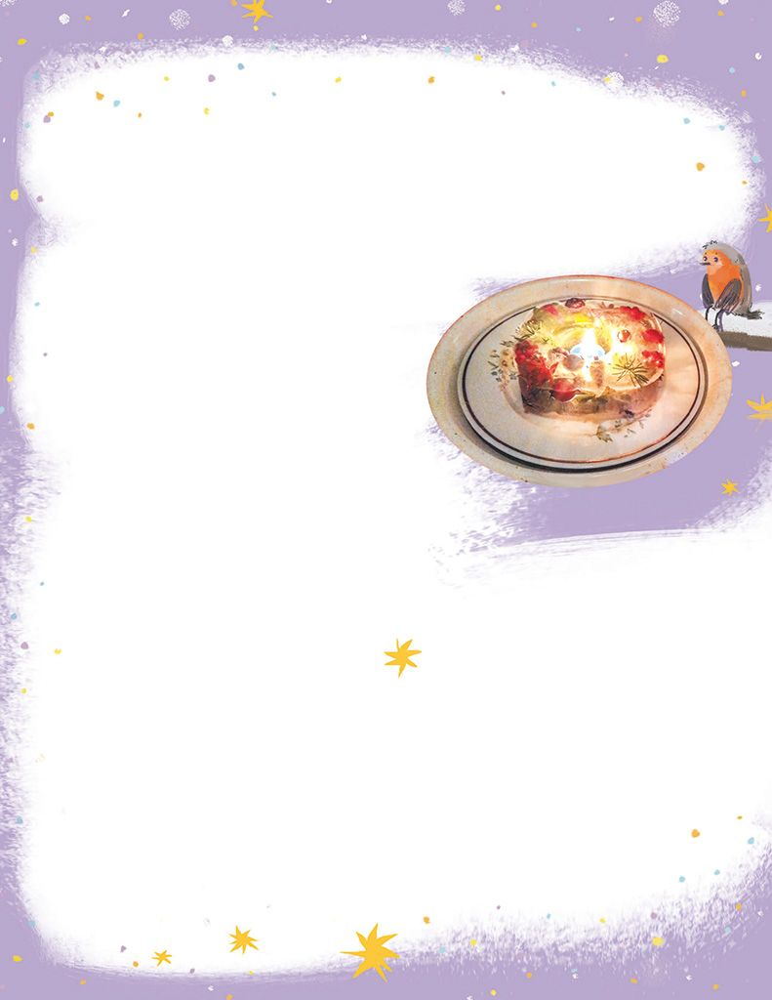
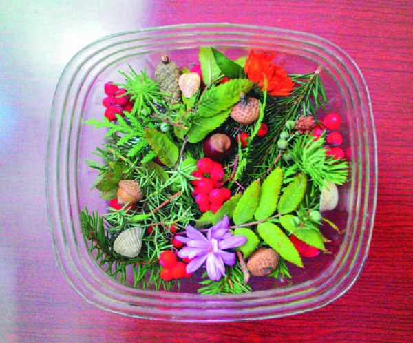

Новогодний подсвечник
Поделка из пластика и природных материалов
Сотворить чудо своими руками и в новогоднюю ночь удивить друзей ледяными... свечками. По-твоему, такое не возможно? Поверь, под Новый год возможно всё!
Тебе понадобится:
- две пластиковые бутылки — на 3 литра и на пол-литра;
- камешки;
- природный материал;
- свечка-гильза;
- большая глубокая миска.
Ход работы:
1. Отрежь от пластиковых бутылок верхнюю половину (фото 1).

2. Выложи в оставшейся части большой бутылки композицию из природного материала (фото 2), а маленькую бутылку заполни камешками.